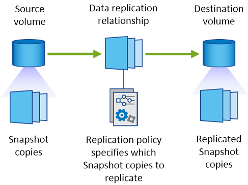
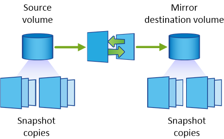

문서 변경 요청
문서 변경 요청 이 페이지 편집
이 페이지 편집 기여하는 방법 자세히 알아보기
기여하는 방법 자세히 알아보기복제 정책에 대해 자세히 알아보십시오
Cloud Manager에서 데이터 복제를 설정할 때 복제 정책을 선택하는 데 도움이 필요할 수 있습니다. 복제 정책은 스토리지 시스템이 소스 볼륨에서 대상 볼륨으로 데이터를 복제하는 방법을 정의합니다.
복제 정책의 기능
ONTAP 운영 체제는 스냅샷 복사본이라는 백업을 자동으로 생성합니다. 스냅샷 복사본은 특정 시점의 파일 시스템 상태를 캡처하는 볼륨의 읽기 전용 이미지입니다.
시스템 간에 데이터를 복제할 때 소스 볼륨에서 타겟 볼륨으로 스냅샷 복사본을 복제합니다. 복제 정책은 소스 볼륨에서 타겟 볼륨으로 복제할 스냅샷 복사본을 지정합니다.

|
복제 정책은 SnapMirror 및 SnapVault 기술을 기반으로 재해 복구 보호 및 D2D 백업 및 복구를 제공하기 때문에 _protection_policies라고도 합니다. |
다음 이미지는 스냅샷 복사본과 복제 정책 간의 관계를 보여줍니다.

복제 정책의 유형입니다
다음과 같은 세 가지 유형의 복제 정책이 있습니다.
-
Mirror_policy는 새로 생성된 스냅샷 복사본을 대상 볼륨에 복제합니다.
이러한 스냅샷 복사본을 사용하여 재해 복구 또는 1회 데이터 복제에 대비하여 소스 볼륨을 보호할 수 있습니다. 언제든지 데이터 액세스를 위해 대상 볼륨을 활성화할 수 있습니다.
-
A_Backup_policy는 특정 스냅샷 복사본을 대상 볼륨에 복제하고 일반적으로 소스 볼륨에서보다 더 오랜 기간 동안 유지합니다.
데이터가 손상 또는 손실된 경우 이러한 스냅샷 복사본에서 데이터를 복원할 수 있으며 표준 준수 및 기타 거버넌스 관련 목적을 위해 데이터를 보존할 수 있습니다.
-
A_Mirror 및 Backup_policy는 재해 복구와 장기 보존을 모두 제공합니다.
각 시스템에는 다양한 상황에서 사용할 수 있는 기본 미러 및 백업 정책이 포함되어 있습니다. 사용자 지정 정책이 필요한 경우 System Manager를 사용하여 직접 만들 수 있습니다.
다음 이미지는 미러 정책과 백업 정책의 차이를 보여 줍니다. 미러 정책은 소스 볼륨에서 사용할 수 있는 스냅샷 복사본을 미러링합니다.

백업 정책은 일반적으로 소스 볼륨에 유지되는 것보다 더 오래 스냅샷 복사본을 유지합니다.